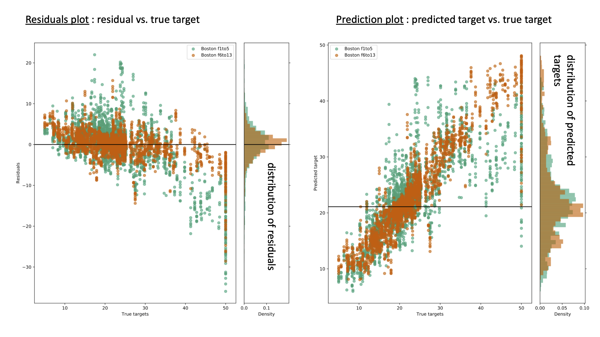

Results from Regression run¶
neuropredict produces a comprehensive report, parts of which can be seen in the figure below for a regression workflow:
{kind=link}

The report consists of
distributions of cross-validated performance, for each of dataset, as measured by \(r^2\), MAE, MSE and explained variance. If you need other metrics, open an issue on github), or you could use the results stored in the CVResults class, in a comprehensive manner, to compute various other metrics yourself easily.
residual plots showing residuals as a function of original target value,
prediction plot showing the predicted target value as a function of original target value, and
few other diagnostic plots (such as subjects with high frequency of large residuals, an indication of them being an outlier) to be made available soon.
Each plots contains all the datasets included for comparison in the original neuropredict run.
Outputs and interpretation¶
The output directory (chosen with -o flag) contains the following sets of files, whose names are self-explanatory. In each set, there is separate visualization (PDF) or CSV file produced for each feature (named features A, B, C and D below) being studied, for your convenience.
First, a set of visualizations in PDF format:
compare_explained_variance_score.pdf
compare_mean_absolute_error.pdf
compare_mean_squared_error.pdf
compare_r2_score.pdf
predicted_vs_target.pdf
residuals_vs_true_targets.pdf
Second [to be added], a set of CSV files in a subfolder called exported_results, which can used for further posthoc statisical analysis or to produce more customised visualizations. The typical contents are shown below - note, filenames may change depending on your input file names.
explained_variance_score.csv
mean_absolute_error.csv
mean_squared_error.csv
r2_score.csv
Third, a Python pickle file results_neuropredict.pkl containing the full set of results, that neuropredict bases the visualizations on. These are organized in a clear dictionary format with self-explanatory variable names, making it easy to reuse them for posthoc analyses in python and other places where pickle files can be read. The CV results stored in the CVResults class, in a comprehensive manner, to make it easy to traverse various combinations and to retain everything, not just the final metrics, but also the original predictions.
Finally, few miscellaneous set of files that neuropredict relies on to produce the comprehensive report.
Although the above results are easy to follow and interpret, We will be adding a detailed walk-through, and some tips on how to interpret them soon.
If something is unclear or confusing, or some documentation is missing, please open an issue on github.